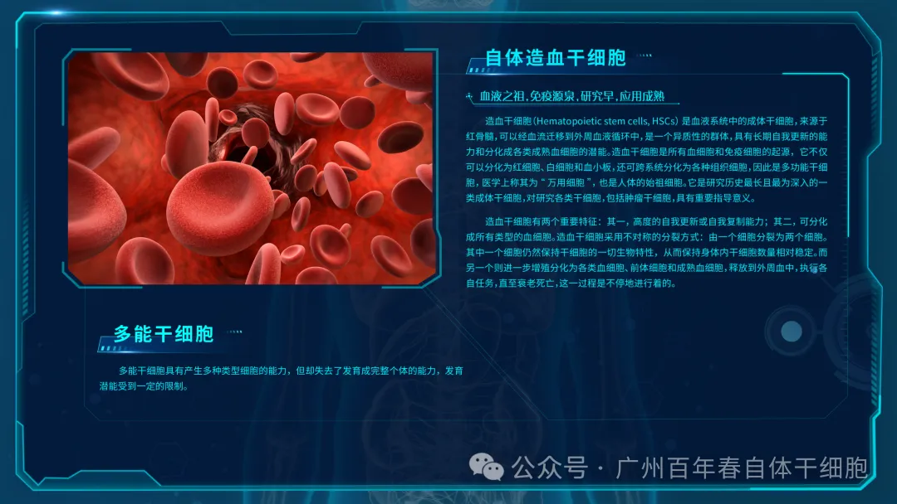
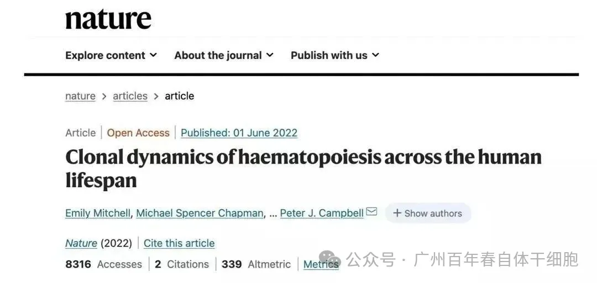
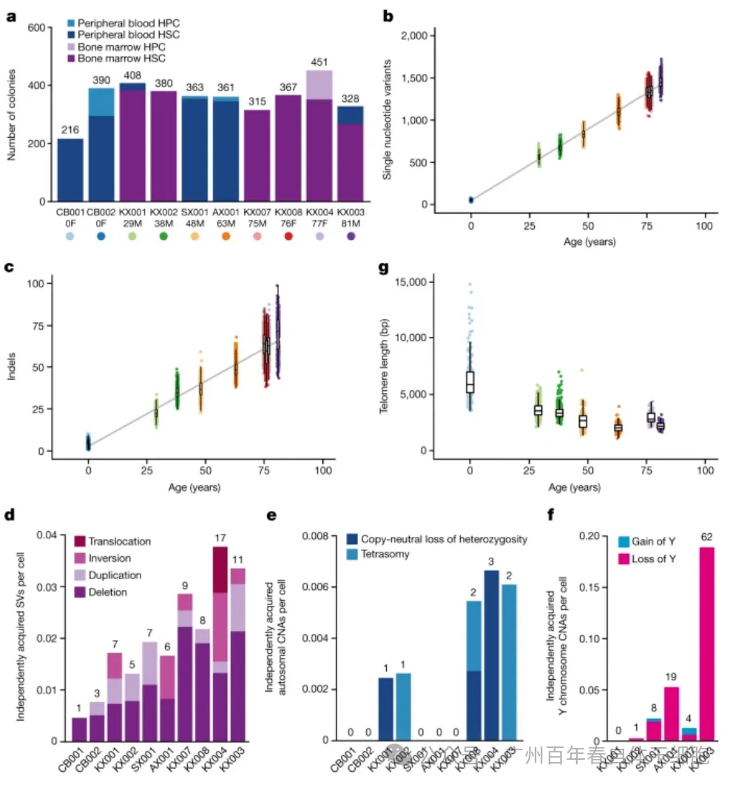
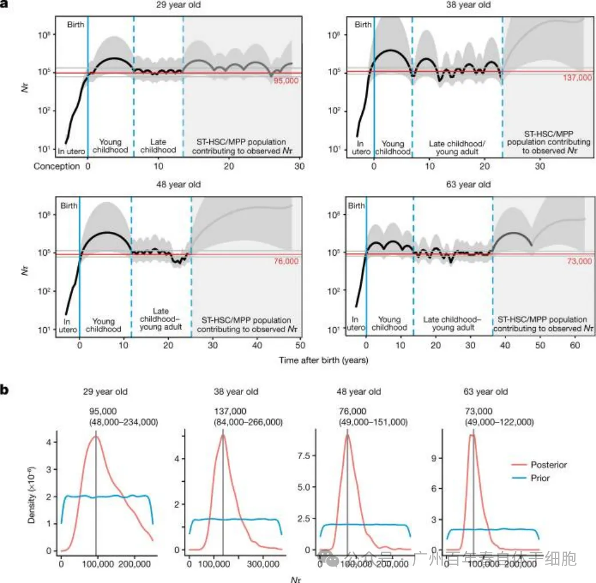
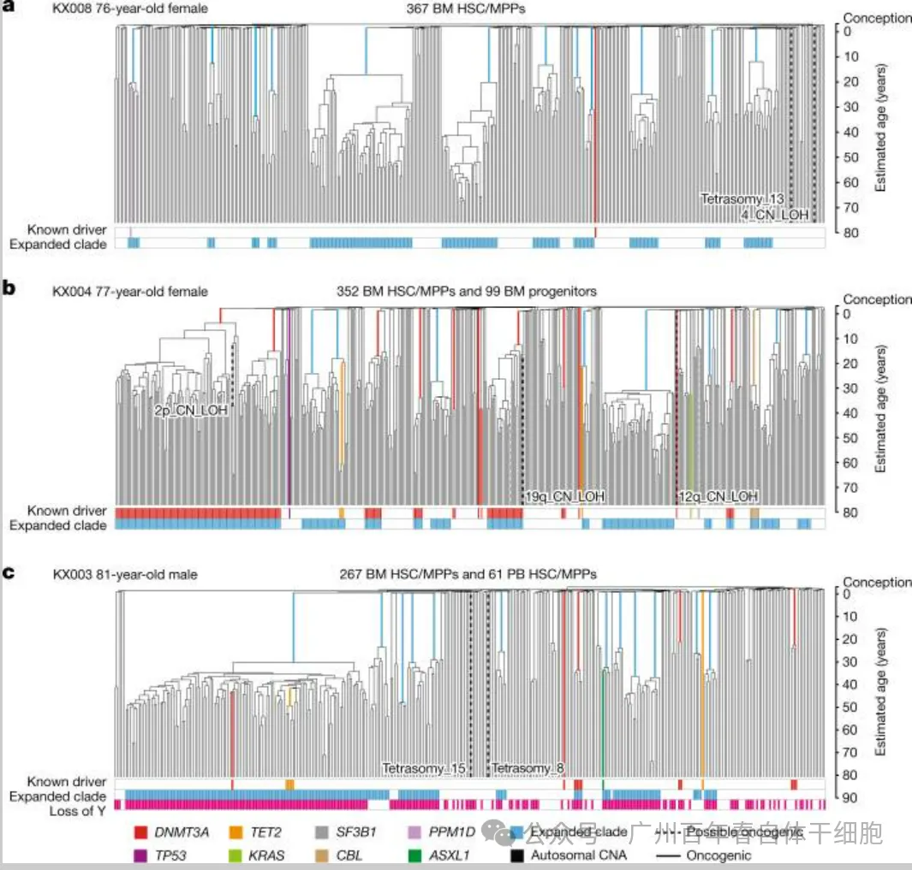

别等身体亮红灯！百年春自体干细胞，为您定制细胞级抗衰防线
2026-03-04

About Us
关于百年春

导语
你有没有发现很多老人70岁前还算硬朗，但一过70岁，身体就明显变差？ 最新科学研究揭示：这可能与你的造血干细胞"集体叛变"有关！
－－－近日，剑桥大学惠康-英国医学研究委员会团队在《Nature》发表了一项重磅研究，人类血液系统在70岁后会经历断崖式衰退——原本数万个和谐共处的造血干细胞，突然被12-18个"霸道"的突变细胞垄断，导致免疫力下降、贫血甚至癌症风险激增！

体细胞突变学说认为，细胞在分裂过程中会不断积累基因突变，最终导致功能衰退。但为何这种衰退在70岁后突然加速？
为探究这一衰老的过程，研究团队对0-81岁人群的3,579个造血干细胞进行全基因组测序，绘制了它们的突变家谱。
结果发现：
每年新增17个突变：从出生开始，造血干细胞就在缓慢积累基因变异。端粒持续缩短：成年后，端粒每年减少约30.8个碱基对。
70岁是临界点：古稀之年的老人，干细胞已累积近900个突变，端粒缩短超1600个碱基对。

图1. 正常造血干细胞/多能祖细胞（HSC/MPPs）中的突变负荷。
干细胞的内卷：少数“自私克隆”垄断造血系统
年轻时，人体依靠数万个干细胞均衡生产血细胞。但70岁后，造血系统的生态彻底改变：
多样性崩溃：老年人30%-60%的血液生产，仅由12-18个干细胞主导。
驱动突变作祟：少数干细胞因获得促生长突变（如癌症相关基因），开始疯狂扩增，排挤正常干细胞。
质量换速度：这些“自私克隆”虽增殖快，但产出的血细胞功能差，导致免疫力下降、贫血等问题。

研究者Emily Mitchell博士说道，本文研究结果表明，由于携带驱动突变的快速生长的细胞克隆发生正向选择，所以血液干细胞的多样性在机体年老时就会丧失，这些克隆会竞争生长较慢的细胞克隆，在很多情况下，干细胞水平的适应性增加或许是有一定代价的，其能产生功能性成熟干细胞的能力会受损，因此或许就能解释观察到的血液系统中与年龄相关的功能丧失。
研究者表示，诸如慢性炎症、吸烟、感染和化疗等因素会导致携带驱动癌症突变的克隆过早地生长。他们预测，这些因素或许会使得与衰老相关的血液干细胞的多样性下降，同时也可能存在一些会减缓这一过程的因素。目前研究人员有了一项新的任务，就是阐明这些新发现的突变是如何影响老年人机体血液产生的，这样或许就能帮助他们学习如何减少疾病风险并促进健康衰老。
图3. 三名老年成年供体的造血干细胞（HSPC）系统发育树。

a–c，针对一位76岁女性供体（a）、一位77岁女性供体（b）和一位81岁男性供体（c）分别构建了系统发育树，并按照图2的描述方式展示。研究中纳入的第四位老年供体的系统发育树展示于扩展数据图5b中。
综上，本文研究结果首次揭示了在个体一生中稳步积累的突变如何引发其在70岁后发生血细胞群的灾难性和不可逆转的改变，这一研究结果或许适用于机体很多器官系统，这种携带突变的克隆或许还会在机体其它许多组织中随着年龄增长而不断扩大，同时这或许会增加个体患癌的风险，也会促进机体与衰老相关的其它功能性改变。